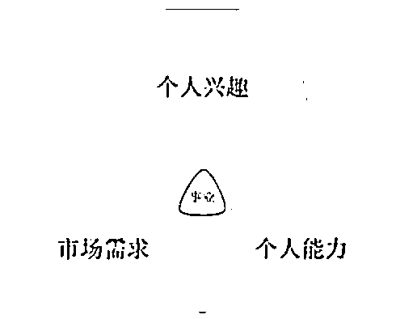
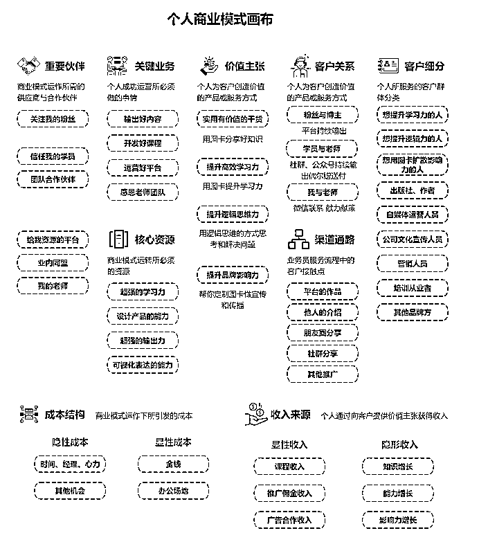
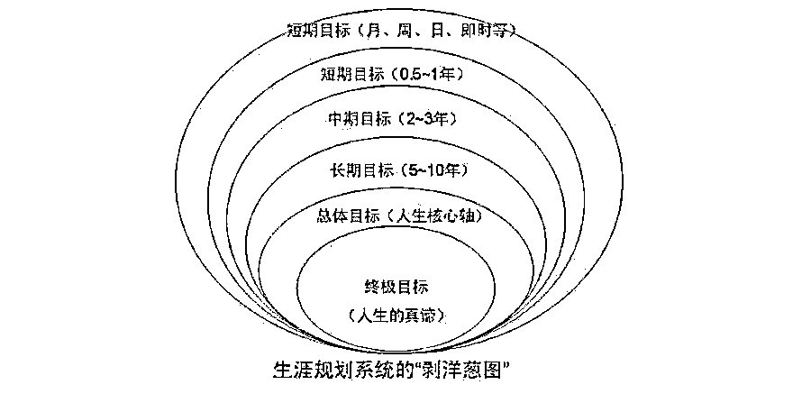
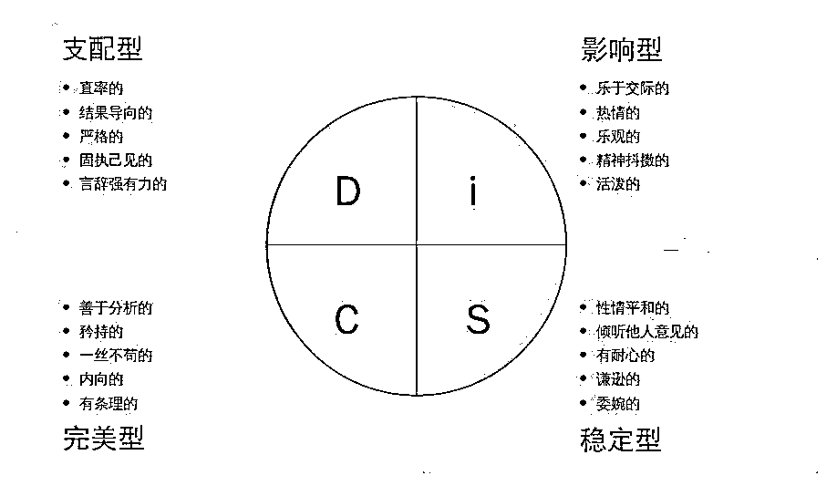

来源：https://ucn1ygqr2fby.feishu.cn/docx/B9LXdFZbjoq8Jnxd65Tcvgr1n3c
大家好，我是Yolo，先简单介绍自己3个标签：
我谦虚认为，自己的经历是可以被复制、0成本、成功率极高。很适合工作过5年以上，或在某个知识、技能有所沉淀，或你特别擅长某个爱好等等，都很有机会可以成为某个垂直领域的知识IP！你完全可以做得比我更出色100倍！
也许你现在还未孵化和变现自己的IP，你缺的只是一点运气、思虑太多和毅力不足，甚至因为你还未行动。
希望我的复盘经历和心得，能让你有一些收获！同时我也立个flag，我这个I人也积极组织和参加深圳生财的线下聚会，面对面可以交流更多隐性知识和经验，一起多多“向前一步”、月亮和六便士都不放弃，终身学习。
一、世界给知识IP变现，提供了太多丰富方式（先帮你破界，打开思路）
二、你自身的资源与能力，足够做一个自己的IP（再帮你内观自己条件）
三、我从0到1的四个阶段经历复盘，期间最重要的原则和经验（可复制）
我参加过一些小白想做知识IP的聚会，发现有一个普遍问题，就是对知识IP的变现的认知太小、太短浅，这样的认知会影响到你对自己产品的定位、未来发展路线的设计。所以第一步先帮你破界、打开思路！
这里提醒：要以结果导向，思考自己知识IP的建立，不要一开始就把路走窄！
人人可以做知识IP，它并没有你想象中门槛那么高！特别是工作过一定时间（如果你要写工作相关的IP，建议至少5年，不然你的分享很容易被质疑），或在某个垂直知识、技能有所沉淀，甚至你特别擅长某个爱好，都可以成为某个垂直领域的知识IP！
在做企业战略时，很重要一点就是做企业内部环境分析，通常最基础的就是“企业资源、企业能力”的分析！
如果你也想像我一样，做自己的知识IP，实际上你就是为自己打工，你一个人就如同一个企业一样，也要做“定位分析”“核心竞争力分析”，所以第一步先了解你的“资源”与“能力”是什么？
为了方便大家理解，我先把这两个词的定义抛出来。

工具包括：商业画布、战略钟、波士顿矩阵等等……



这个阶段，我只是模糊地感觉到小红书平台调性很适合我，但没有具体执行。“快速正向反馈”是最好的老师，这个阶段，我通过在最右 APP 找素材，每日更新娱乐八卦笔记、搞笑人物动物笔记等，也发布过自己的旅游干货分享。在两周时间内获得了 1000 多粉丝，对于在小红书发笔记已经找到“手感”，对于平台用户喜欢点赞收藏“情绪价值或干货价值”的笔记也非常清楚，明确坚决杜绝自己发毫无价值的自嗨笔记。
这个阶段我还尝试发布过很火的 PLOG 笔记或金句笔记，也不断在思考，为何别人发此类笔记容易爆，自己的内容也不差却不行？自己分析一个重要原因是，除了很多人是有机构的矩阵账号并加以推波助澜外，更关键的是当时我并非是一个垂类账号，内容种类较多。但实际上，喜欢某一风格或某一内容的客户是非常精准的。在 5 亿的大流量池中，作为渺小的个人账号，绝对不能创作杂而泛的内容，一定要越精准越好，甚至精准到某特定年龄、特定吃饭偏好、或特定学历等等。在这 5 亿大流量池里，只要精准满足了 0.001%的人的需求，就能找到 5000 个愿意为您付费的人。若单价是 1000 元/人，那就是 500 万元的交易收入，这还没算复购率。
第一条：将自己喜欢、擅长以及市场需求三者相结合，会产生强大的自驱力，更适合作为长期主义的事业。在不是很缺钱生活的情况下，不要花费大量时间精力去做任何自己本质上不喜欢、不擅长的赚钱事业。因为一个人做自己的事业非常需要强大的意志，那些不喜欢、不擅长且从中无法获得一点正向反馈的，最终难以长期坚持并做出大成果。
第二条：想到就去做，在短时间内不拒绝任何尝试（与上一条不矛盾），人生重在体验！
第三条：虽然不可能从第一篇笔记就实现变现，但从第一篇笔记开始就要考虑未来的变现模式，不赚单次的钱！
第一条：笔记要容易爆，内容要么提供情绪价值（如宠物治愈、明星八卦、低俗快乐等），要么提供干货价值。如果是从自身感受发表的自嗨笔记，通常没用，除非您是大明星网红，或者满足第二条经验。
第二条：踩在热点风口上，平台有时会给予流量，只要内容不太差，获得上千个小眼睛轻而易举。
第三条：笔记一定要引导评论，点赞是 1 分，评论是 4 分，笔记内容越容易引起讨论越容易上量（这在任何平台都是绝对的真理，但不可做三观不正的引导评论）。
第四条：垂类客户、垂类内容、垂类场景至关重要，尤其对于个人 IP 而言。如果希望尽快起量，获得良好的正向反馈，先做一个垂类的号。比如，做一个教写作的号会很难，但如果专注于某一类写作的教学，比如毕业论文、核心期刊文等，就容易出彩。再比如，做一个美妆带货的号现在很难（赛道太卷），但如果专注于做一个黑皮、155 身高、沙漠肌肤、非常喜欢牛仔喇叭裤的口红带货，就很容易脱颖而出！
某一天，我发现小红书“每日热点排行榜”中有一条关于“论文开题报告”，恰好我对此颇有心得，便迅速分享了自己当初在知网一步步“聪明”找到各种别人不知道的入口，以及如何快速找到对标选题等内容。如今回头看，当时的图片和文字都比较粗糙，但确是教人快速走聪明路的干货，而且赶上了热点，记得不到 3 天就收获了 1000 个点赞收藏，第二天就有人来请教问题。
我立刻意识到两件事：一是终于找到一个能让我的资源和能力良好匹配需求的市场（之前做娱乐、搞笑，并非我的资源和能力涉猎范围，并非长久之计）；二是必须马上抓住这个“蛋糕”（变现），迅速抓住机会。从有人提问开始，我马上日更论文的各类笔记，有人询问能否辅导时，我立即答应并引流私域，尽管我与他们并非同一专业，涵盖本科、研究生，甚至因为我分享的内容干货满满、有深度，吸引了不少在读博士找我辅导。
开始接辅导时，真的是从点滴做起。如今我的论文辅导全程价格达到五位数字，不接专本科（沟通成本高，定价也不能太高），但谁能想到，最初我的第一个全文辅导价格是 399 元，负责到最终毕业（实际周期约半年），是从一个本科财务专业的小妹妹开始。那时，我既要一周更新 2 - 4 次图文或视频笔记，又要晚上辅导不同专业的学生（白天还要上班），每天的时间安排得满满当当，但也特别充实，找到了人生新价值，这是在每天 007 的工作中无法获得的满足感。
小红书平台每个阶段都会有新活动和新窗口红利，接到官方邀请后，即便有些我未曾尝试过，但为了完成任务奖励的几万、几十万曝光量，我都会积极参与。比如发直播预告的笔记，能奖励 10 - 50 万流量，这时我会把辅导后的好评记录包装成多条直播预告笔记，效果特别好（不逊于现在的聚光投光效果，而且还是免费的），又如官方当时推读书直播、读书活动，我会把跟论文写作相关的书籍再推送几波笔记，也赢得了不少免费流量。不要一味埋头苦干，在平台公域，要想办法尽力“薅羊毛”，实现与平台双赢。
第一条：勇敢的人，先享受世界。这里的勇敢，指的是行动力和精力管理。并非是因为成为成功的知识 IP 才有“勇敢”，而是在行动之前，就具备“行动力和精力管理”。
第二条：时刻保持对商业变现的敏锐度。当流量来临，立刻思考如何变现，不惜废寝忘食也要承接住流量，迎接巨大的“富贵”。
第一条：每篇笔记构思前，都要考虑贴合平台热点流量进行创作和发送。比如，我会高频关注小红书的“每日热点排行榜”、每周更新的“笔记灵感”、“关键词下的热门笔记”等，若当天有适合自己的热点，立即创作跟帖，收获 1000 个小眼睛并非难事，笔记容易走红。
第二条：要多留意平台的新窗口小红利机会，一旦发现就得迅速抓住，紧跟平台步伐，积极参加新活动，利用平台资源获取免费流量，与平台合作实现双赢。
产品定价制定：之前参加生财的一次知识 IP 变现交流，现场有人讲述自己打算如何定价、这些价格包含哪些内容服务，我当时说，听您这种说法就知道您还停留在纸上设想，肯定没有开始做或者尚未形成自己的产品价格体系。产品定价最基础的有 3 种最基本方法：成本导向定价法、需求导向定价法和竞争导向定价法。刚开始做的时候，需要考虑的是成本导向定价法，不仅要考虑时间成本，前期更重要的是自身资源与能力的成本。比如 2 年前的我和现在的我，价格差异巨大，道理很简单，但放到自己身上，可能就容易糊涂。如果刚刚开始做知识付费，去对标一些机构或者有几年沉淀的人是不合适的，因为自身的资源、能力和别人不在同一水平线上。这个阶段更重要的是积累客户，并且迅速打磨自己专业交付的能力，以应对后续阶段做高客单价以及更大客户的需求。
丰富产品体系：如今我的交付产品，除了论文全文辅导，还有单次知识咨询、目录制作、答辩等各类单品咨询服务，形式多样。这与我之前从事营销和产品经理的工作相关，对于产品设计以及如何体系化营销自己，比较得心应手。所以在第一个客户找我的时候，我就已经意识到丰富产品交付类型的重要性。拆解需求、满足不同客户的不同需求，也是增加收入的重要途径之一。以前小红书管得不严，还可以挂咨询作为商品，流量变现效果不错（现在偶尔也可以，但查到可能会封号，我就不再做铤而走险的事了）
第一条：产品定价初期应采用成本导向定价法，注重积累客户和打磨专业交付能力，不可盲目对标他人。
第二条：持续丰富产品体系，拆解需求，满足不同客户的需求，以增加收入（也是降低风险的有效方法）。
第一条：充分了解自身价格差异的原因，明白价格会随时间推移和能力提升而改变。在发展中，要敏锐感知市场需求和自身价值的变化，从而适时合理调整价格，确保价格与自身能力和市场需求匹配。
第二条：要时刻关注平台规则的变化，明确平台对各类事务的规定和限制。在变现时严格遵守规则，避免可能导致封号等不良后果的冒险行为。若平台对某些变现方式管控加强，需及时调整策略，寻找合规方式实现流量变现。平时也要多与用户或者同行交流，相互分享经验和信息，共同应对平台规则变化带来的问题，确保在平台上稳定发展。
小红书和所有平台一样，都有其每个阶段的战略规划和发展重点。
2022 年之前，小红书需要内容创作者，所以很多做干货内容的大账号的粉丝都是之前沉淀下来的，那时涨粉相对现在容易些（原因很简单，平台会倾斜流量）；
2023 年，小红书在消费者保护日 315 被国家处罚，大力打击封杀有引流行为或不良舆论导向等情况，对内容创作打击很大（我还记得 2023 年 3 - 5 月那段极其黑暗的时期，我 1 年前的普通笔记都被平台翻旧账下掉，很多做摄影师、手办等引流痕迹明显的账号直接被封）；
2024 年，众所周知，小红书自身也要大力变现，所以大力鼓励蒲公英广告、直播带货等。所以这个时候如果还只考虑小红书引流变现，真的如同在刀尖上行走。还记得之前说的原则吗？“勇敢的人，先享受世界”，要敬畏和顺势而为。如果现在开账号做知识 IP，一定要考虑平台希望你做什么，站在风口上的猪，才会飞。
2023 年我在一定程度上减少了内容分享，改成一周一更，但把内容分享的质量做得更加精进。也因为实实在在做内容，所以收入稳步上升。像我这种不是靠广告收入的，反而走得更稳。我的“甲方”实际上是平台和“识货”的目标客群，所以只要平台流量稳步上升，自己遵守平台规则，做精内容，就不会太有流量焦虑。（我的广告贴接的很少，接广告贴主要是为了品牌背书，比如 kimi ai 广告、网易翻译广告、wps 广告等，其他小品牌我是不接的，有的放矢，自己的 IP 才是最重要的资产）
知识 IP，之前有人说要做大，目前主要有两条路：做矩阵号和知识付费（教别人复刻自己的路），但对于有正业的人做知识 IP，或没有想一年赚到 500 万以上，或更关注自己生活家庭的人来说，还有一条路是做高客单价。从市场营销的角度，我个人认为，高客单价受客户、渠道、产品三方面因素影响。找到愿意和有能力承担高客单价的客户，通过某些特定渠道（比如我正跟一些企业合作，他们作为我的引流渠道），提供符合高客单价的客户和渠道所需的产品服务，以及提升个人这个 IP 的价值（这是最重要的产品）。目前我在继续深耕，如果你对这块感兴趣，欢迎交流。
第一条：关注平台发展动态，明晰平台的战略规划和重点，从平台视角思考问题，顺势而为，如同站在风口上的猪才能起飞。
第二条：要有尝试的勇气，但也要谨慎行事，务必遵守平台规则，与平台合规共同成长。
第一条：有选择性地接广告贴，如果追求长远可持续发展，主要考虑品牌背书，避免接一些劣质的小品牌广告，以保护自己的 IP 资产。
第二条：平台的发展重点对内容创作者至少有 3 点影响：流量倾斜、政策限制、变现方式转变。因此需要及时调整创作和运营策略，以适应平台的变化。